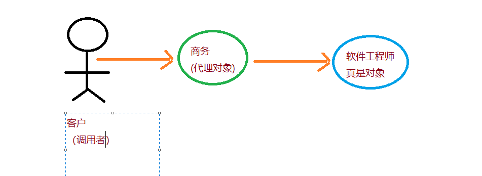

1.反射对象
1.1 通过反射构建无参数对象
public class ReflectServiceImpl {
public void sayHello(String name){
System.err.println("Hello "+name);
}
public ReflectServiceImpl getInstance(){
ReflectServiceImpl object = null;
try {
//给类加载器注册一个类ReflectServiceImpl的全限定类名，然后通过newInstance方法初始化一个类对象
object = (ReflectServiceImpl)Class.forName("com.lean.ssm.chapter2.ReflectServiceImpl").newInstance();
} catch (InstantiationException e) {
e.printStackTrace();
} catch (IllegalAccessException e) {
e.printStackTrace();
} catch (ClassNotFoundException e) {
e.printStackTrace();
}
return object;
}
}
1.2 通过反射生成带有参数的构建方法
public class ReflectServiceImpl2 {
private String name;
public ReflectServiceImpl2(String name){
this.name = name;
}
public void sayHello(String name){
System.err.println("Hello "+name);
}
public ReflectServiceImpl2 getInstance(){
ReflectServiceImpl2 object = null;
try {
/*
想通过forName加载到类的加载器。然后通过getConstructor方法，他的参数可以是多个，
这里定义为String.class，意为有且只有一个参数类型为String的构建方法
通过这个方法可以对重名方法进行排除，此时再用newInstance方法生成对象，只是newIntstance方法也多了一个参数而已
实际就等于object=new ReflectServiceImpl2("迪丽热巴");
*/
Class.forName("com.lean.ssm.chapter2.ReflectServiceImpl2").getConstructor(String.class).newInstance("迪丽热巴");
} catch (InstantiationException e) {
e.printStackTrace();
} catch (IllegalAccessException e) {
e.printStackTrace();
} catch (InvocationTargetException e) {
e.printStackTrace();
} catch (NoSuchMethodException e) {
e.printStackTrace();
} catch (ClassNotFoundException e) {
e.printStackTrace();
}
return object;
}
}
反射的优点是只要配置就可以生成对象，可以解除程序的耦合度，比较灵活。反射的缺点是运行比较慢。但是大部分情况下为了灵活度，降低程序的耦合度，我们还是会使用反射的。 比如Spring IoC容器
2.反射方法
public class ReflectServiceImpl {
public void sayHello(String name){
System.err.println("Hello "+name);
}
public ReflectServiceImpl getInstance(){
ReflectServiceImpl object = null;
try {
//给类加载器注册一个类ReflectServiceImpl的全限定类名，然后通过newInstance方法初始化一个类对象
object = (ReflectServiceImpl)Class.forName("com.lean.ssm.chapter2.ReflectServiceImpl").newInstance();
} catch (InstantiationException e) {
e.printStackTrace();
} catch (IllegalAccessException e) {
e.printStackTrace();
} catch (ClassNotFoundException e) {
e.printStackTrace();
}
return object;
}
//获取和反射方法
public Object reflectMethod(){
Object obj = null;
ReflectServiceImpl target = new ReflectServiceImpl();
try {
/*
* 当有了具体的对象target,而不知道具体是哪个类时，也可以使用
* target.getClass().getMethod("sayHello", String.class);来代替他
* 其中第一个参数是方法名称，第二个参数是参数类型，是一个列表，多个参数可以继续编写多个类型，这样便能获得放射的方法对象
*
* */
Method method = ReflectServiceImpl.class.getMethod("sayHello", String.class);
/*
* 放射方法 是运用obj=method.invoke(target,"迪丽热巴");代码完成的
* 第一个参数是target ,就是确定用哪个对象调用方法，而"迪丽热巴"是参数
* 就等同于target.sayHello("迪丽热巴")
* */
obj=method.invoke(target,"迪丽热巴");
} catch (NoSuchMethodException e) {
e.printStackTrace();
} catch (IllegalAccessException e) {
e.printStackTrace();
} catch (InvocationTargetException e) {
e.printStackTrace();
}
return obj;
}
}
3.实例
通过实例来看看如何放射生成对象和反射调度方法
public static Object reflect(){
ReflectServiceImpl object = null;
try {
//反射得到ReflectServiceImpl对象
object = (ReflectServiceImpl)Class.forName("com.lean.ssm.chapter2.ReflectServiceImpl").newInstance();
//反射得到sayHello方法
Method method = object.getClass().getMethod("sayHello", String.class);
try {
//相当于object.sayHello
method.invoke(object,"迪丽热巴");
} catch (InvocationTargetException e) {
e.printStackTrace();
}
} catch (InstantiationException e) {
e.printStackTrace();
} catch (IllegalAccessException e) {
e.printStackTrace();
} catch (ClassNotFoundException e) {
e.printStackTrace();
} catch (NoSuchMethodException e) {
e.printStackTrace();
}
return object;
}获取放射对象需要使用类加载器，获取放射方法需要知道是哪个对象
2.动态代理模式
动态代理的意义在于生成一个占位(又称代理对象)，来代理真实对象，从而控制真实对象的访问
先来谈谈什么是代理模式。假设这样的一个场景，你的公司是一家软件公司，你是一位软件工程师。客户带着需求去找公司显然不会直接和你谈，而是去找商务谈，此时客户会认为商务就代表公司。
让我们用一张图来表示代理模式的含义

显然客户是通过商务区访问软件工程师的，那么商务(代理对象)的意义在于什么呢?
商务可以进行谈判，比如项目启动前的商务谈判，软件的价格，交付进度的时间节点等，
或者项目完成后的商务追讨收账款等。
代理的作用就是：在真实对象访问之前或者之后加入对应的逻辑，或者根据其他的规则控制是否使用真实对象
经过上面的论述，我们知道商务和软件工程师是代理和被代理的关系，客户是经过商务去访问软件工程师的。此时客户就是程序中的调用者，商务就是代理对象，软件工程师就是真实对象。
所以，我们需要在调用者调用对象之前产生一个代理对象，而这个代理对象需要和真实对象建立代理关系，所以代理必须分为两个步骤
代理对象和真实对象建立代理关系
实现代理对象的代理逻辑方法
在Java中有多种动态代理技术，比如JDK、CGLIB、Javassist、ASM，其中最常用的动态代理技术有两种:一种是JDK动态代理，这是JDK自带的功能；另一种是CGLIB，这是第三方提供的一个技术。目前Spring常用JDK和CGLIB,而mybatis还是用了Javassist,无论哪种代理技术，他们的理念都是相似的。
在JDK动态代理中，我们必须使用接口，而CGLIB不需要。
2.1 JDK动态代理
JDK动态代理是 java.lang.reflect.*包提供的方式，他必须借助一个接口才能产生代理对象
定义接口
public interface HelloWorld {
public void sayHelloWorld();
}
实现接口
public class HelloWordImpl implements HelloWorld {
public void sayHelloWorld() {
System.out.println("Hello World");
}
}
这是最简单的Java接口和实现类的关系，此时可以开始动态代理了。按照我们之前的分析，先要建立起代理对象和真实服务对象的关系，然后实现代理逻辑，所以一共分为两步
在JDK动态代理中，要实现代理逻辑类必须去实现java.lang.reflect.InvocationHandler接口，他里面定义了一个invoke方法，并提供接口数组用于下挂代理对象
//创建代理对象，必须实现InvocationHandler接口
public class JdkProxy implements InvocationHandler {
//真实对象
private Object target = null;
/**
* 建立代理对象和真实对象的代理关系，并返回代理对象
* @param target 真实对象
* @return 代理对象
*/
public Object bind(Object target){
//用于保存真实对象
this.target=target;
//返回的是代理对象
return Proxy.newProxyInstance(target.getClass().getClassLoader(),target.getClass().getInterfaces(),this);
}
/**
*代理方法逻辑
* @param proxy 代理对象
* @param method 当前调度方法
* @param args 当前方法参数
* @return 代理返回结果
* @throws Throwable 异常
*/
public Object invoke(Object proxy, Method method, Object[] args) throws Throwable {
System.out.println("进入代理逻辑方法");
System.out.println("在调度真实对象前的服务");
//相当于调度真实对象的方法，只是通过反射实现而已
Object obj = method.invoke(target, args);
System.out.println("在调度真实对象之后的服务");
return obj;
}
}
第一步，建立代理对象和真实对象的关系。
newProxyInstance方法包含三个参数。
第一个是类加载器
第二个是把动态代理挂在哪个接口上
第三个是定义实现方法逻辑的代理类，this表示当前对象，他必须实现InvocationHandler接口的invoke方法，他就是代理逻辑方法的现实方法
第二步，实现代理逻辑方法，invoke方法可以实现代理逻辑，invoke方法的有3个参数
proxy,代理对象，就是bind方法生成的对象
method，当前调度的方法
args，调度方法的参数
测试动态代理
public static void testJdkProxy(){
JdkProxy jdk = new JdkProxy();
//绑定关系，因为挂在接口HelloWorld下，所以声明对象HelloWorld proxy
HelloWorld proxy =(HelloWorld)jdk.bind(new HelloWordImpl());
//注意，此时HelloWorld对象已经是一个代理对象，他会进入代理的逻辑方法invoke里
proxy.sayHelloWorld();
}CGLIB动态代理
JDK动态代理必须提供接口才能使用，在一些不能提供接口的环境中，只能采用其他第三方技术，比如CGLIB动态代理。他的优势在于不需要提供接口，只要一个非抽象类就能实现动态代理
public class CglibProxy implements MethodInterceptor {
/**
* 生成CGLIB代理对象
* @param cls Class类
* @return Class类的CGLIB代理对象
*/
public Object getProxy(Class cls){
//CGLIB enhancer 增强类对象
Enhancer enhancer = new Enhancer();
//设置增强类型
enhancer.setSuperclass(cls);
//定义代理逻辑对象为当前对象，要求当前对象实现MethodInterceptor方法
enhancer.setCallback(this);
//生成代理对象并返回9
return enhancer.create();
}
/**
*
* @param proxy 代理对象
* @param method 方法
* @param args 方法参数
* @param methodProxy 方法代理
* @return 代理逻辑返回
* @throws Throwable 异常
*/
public Object intercept(Object proxy, Method method, Object[] args, MethodProxy methodProxy) throws Throwable {
System.out.println("调用真实对象前");
//CGLIB反射调用真实对象方法
Object result = methodProxy.invokeSuper(proxy,args);
System.out.println("调用真实对象后");
return result;
}
}
这里用 了CGLIB的加强者，通过设置超类的方法(setSuperclass)，然后通过setCallback(方法)设置哪个类为它的代理类。其中，参数为this就意味着当前对象，那就要求用this这个对象实现接口MethodInterceptor的方法——intercept，然后返回代理对象。
那么此时当前类的intercept方法就是其代理逻辑方法，其参数内容见代码注解，我们在反射真实对象前后进行了打印，CGLIB是通过如下代码完成的
Object result = methodProxy.invokeSuper(proxy,args); 测试一下CGLIB动态代理
public static void testCGLIBProxy(){
CglibProxy cp = new CglibProxy();
ReflectServiceImpl obj=(ReflectServiceImpl) cp.getProxy(ReflectServiceImpl.class);
obj.sayHello("迪丽热巴");
}以上的所有内容皆来自Java EE互联网轻量级框架整合开发